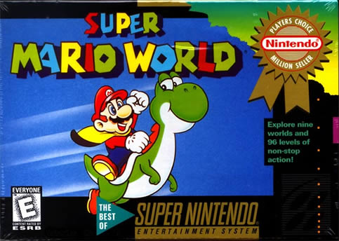

Final Fantasy 3(VI)
Probably my favorite game on the SNES, and my favorite Final Fantasy of all time.
The combat was excellent, the characters all well fleshed-out. Who could forget Kefka, the most evil villain in any FF? He makes Sephiroth look like a choir boy. Sephiroth did it all for revenge; Kefka destroyed the world because just because. I will never forget this game!
Earthbound
Probably the most unique game I've ever played.
Another turn-based RPG, but this one is definitely a little different. You play as a bunch of teenagers fighting an alien force bent on destroying the world, but you use baseball bats and yo-yos as weapons. You fight rabid dogs and cops and other weird enemies, and YOU as the player are the person who defeats the end boss!
Zelda: A Link to the Past

Ahhh, my first SNES game
This is a true classic, and my favorite Zelda. Introduces the origins of the dark world and the original Gannon. Excellent puzzles and a lot of fun to explore!
Secret of Mana
An RPG you can play with a friend!
This game starts off simple and continually gets more intense. Surprisingly dark at times for such a colorful game. The spell system is unique and teaches you to exploit weaknesses, and I really enjoyed levelling everything up to max. Plus you can have a friend control one of the other characters!
Super Mario World

A true classic
I think this is my favorite Mario game. So many little tricks to it, and finally getting the hang of the cape was something to be proud of. There are secret levels upon secret levels! If you've never been to Cool World then you haven't really played this game!